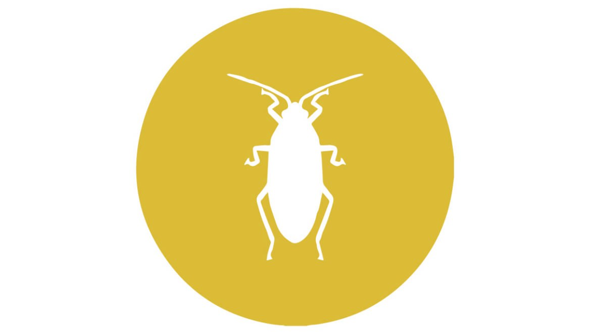

MUĞLA DELTA İLAÇLAMA
Hamam Böcekleri
Muğla Delta İlaçlama

Hamam Böcekleri
Hamam böceğinin zararları nelerdir? Hamam böcekleri tüm dünyada en çok şikayet edilen ve kurtulmak için çok farklı yollara başvurulan bir haşeredir. Çünkü artık bu haşerenin zararları konusunda hemen herkes bilinçlenmiştir. Ülkemizde de son zamanlarda, hem bu haşerenin çok fazla artmasıyla hem de halkımızın bilinçlenmesiyle hamam böceklerine karşı çok farklı şekillerde ilaçlama yöntemleri geliştirilmiştir. Hamam böceklerine karşı mutlaka iyi bir böcek ilaçlama şirketi uygulama yapmalıdır. Peki, hamam böceğinin zararları nelerdir ve bu haşereler daha çok hangi alanlarda bulunmaktadır?
• Her şeyden önce insan sağlığına çok ciddi bir şekilde zarar vermektedirler.
• Verdikleri maddi zararlara ek olarak sağlığımızı olumsuz yönde etkileyen bu haşere, aynı zamanda bebekler için de oldukça tehlikeli olabilmektedirler.
• Çok mikroplu ve pis ortamlarda yaşayabilen hamam böcekleri, üzerlerinde olan mikroplara dahi karşı gelemeyip kendi kendilerini öldürmektedirler. Çoğu zaman sokaklarda ters dönmüş hamam böcekleri görmemizin sebebi budur.
• Evde gezindikleri her yere mikrop bulaştıran hamam böcekleri, küçük çocuklar için ve emekleyen bebekler için oldukça tehlikelidir de. Aynı zamanda gıda maddelerinin üzerlerinde dolaştıkları zaman gıdaların bozulmasına ve gıda zehirlenmelerinin oluşmasına neden olmaktadırlar.
Maddi ve manevi hasarlara neden olan hamam böceği ile mücadele etmek için kurumsal kimliğe sahip olan firmamız ile 7 gün 24 saat iletişime geçebilir, ekibimizden destek alabilirsiniz.
Hamam Böcekleri Nerelerde Bulunur?
Hamam böcekleri nerelerde bulunur? En çok oldukları yerlerden biri de restoran ve lokantaların mutfakları ve yeme içme alanlarıdır. Müşteriler tarafından bir tane sineğin bulunması bile hoş karşılanmazken hamam böceklerinin olması, iş sahibi için oldukça prestij kaybettiricidir. İnsanın ve toplumsal düzenin olduğu her yerde varlıklarını sürdüren hamam böceklerinden kurtulmanın tek yolu hamam böceği ilaçlama operasyonudur.
Bizimle iletişime geçin